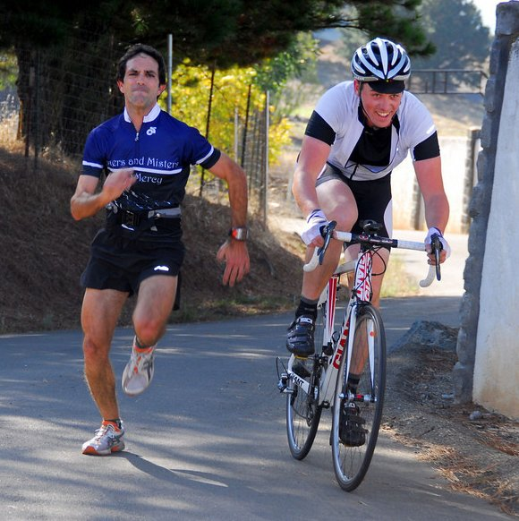

|  |
| Gary Gellin sprints with Kevin Comerford (Phil Dubach) |
With perfect climbing weather, strangely pristine asphalt, and no issues with cars on the narrow road, Welch Creek road was a spectacular success.
There seemed to be that extra bit of happiness at the finish today, as riders knew they'd accomplished something notable in making it to the top of this climb. But that extra bit of happiness was evident in riders from Sisters and Misters of No Mercy, who showed absolutely none today in leading the men's (Brian Lucido) and women's (Janet Martinez) standings today. With Carl Nielson's assistance on the men's side, the team took control of the day's team ranking, and are now solidly in second place behind Western Wheelers.
Special thanks today for the fantastic volunteer crew who once again did a absolutely excellent job with results, but thanks as well go to the riders who came out and did so well against so challenging a climb.
Strava T-shirt qualifiers indicated with orange background.
| pl | # | name | team | cat | time | mph | fph | score |
|---|---|---|---|---|---|---|---|---|
| 1 | 6 | Bill Bushnell | Low-Key | It Is About The Bike | 19:42 | 11.88 | 5685 | 97.55 |
| pl | # | name | team | cat | time | mph | fph | score |
|---|---|---|---|---|---|---|---|---|
| 1 | 109 | Brian Lucido | Sr's & Mr's of No Mercy | Tandem | 24:08 | 9.69 | 4641 | 128.77 |
| 2 | 53 | Tim Clark | Low-Key | 40+ | 24:51 | 9.42 | 4507 | 125.06 |
| 3 | 147 | Russell Stevens | ACTC | 40+ | 25:03 | 9.34 | 4469 | 124.00 |
| 4 | 236 | Carl Nielson | Sr's & Mr's of No Mercy | 50+ | 25:20 | 9.24 | 4422 | 122.69 |
| 5 | 34 | Jacob Berkman | Mission Cycling | 30+ | 25:44 | 9.09 | 4351 | 120.74 |
| 6 | 72 | Brian Edwards | The Dirkers | 26:01 | 8.99 | 4305 | 119.45 | |
| 7 | 1 | Dan Connelly | Low-Key | 3 | 26:03 | 8.98 | 4298 | 119.26 |
| 8 | 326 | Clark Foy | San Jose Bike Club | U23 | 26:10 | 8.94 | 4280 | 118.76 |
| 9 | 145 | Daryl Spano | San Jose Bike Club | 40+ | 26:17 | 8.90 | 4262 | 118.25 |
| 10 | 307 | Joe Fant | San Jose Bike Club | 50+ | 26:26 | 8.85 | 4236 | 117.53 |
| 11 | 218 | Tom Gardin | Low-Key | 45+ | 26:30 | 8.83 | 4227 | 117.29 |
| 12 | 123 | Christian Paquet | Doogie | 50+ | 26:31 | 8.82 | 4224 | 117.19 |
| 13 | 603 | Ken Gallardo | Pen Velo/Pomodoro | 35+ | 26:49 | 8.72 | 4176 | 115.87 |
| 14 | 170 | Ryan Bickerstaff | PowerBar | 25+ | 27:11 | 8.60 | 4119 | 114.28 |
| 15 | 39 | Ron Brunner | Low-Key | 40+ | 27:24 | 8.54 | 4088 | 113.42 |
| 16 | 120 | Shance Ordell | Western Wheelers | 35+ | 27:29 | 8.51 | 4074 | 113.03 |
| 17 | 600 | Klaus Brosamle | Team Zappi's (Oxford) | 25+ | 27:31 | 8.50 | 4071 | 112.95 |
| 18 | 146 | Brian Sterling | Webcor/Alto Velo | 45+ | 27:31 | 8.50 | 4069 | 112.90 |
| 19 | 301 | Marcel Appelman | Mission Cycling | 40+ | 27:39 | 8.46 | 4051 | 112.40 |
| 20 | 602 | Mark Debbage | 40+ | 28:27 | 8.22 | 3936 | 109.22 | |
| 21 | 37 | Adam Brinkman | The Dirkers | 30+ | 28:31 | 8.21 | 3928 | 108.99 |
| 22 | 507 | Klaus Fleischmann | 40+ | 28:39 | 8.17 | 3909 | 108.47 | |
| 23 | 262 | Carmelo Rios | Plus 3 | 50+ | 28:49 | 8.12 | 3887 | 107.85 |
| 24 | 601 | Brian Canali | 45+ | 28:58 | 8.07 | 3866 | 107.26 | |
| 25 | 506 | Andy Crews | 40+ | 29:24 | 7.96 | 3810 | 105.71 | |
| 26 | 104 | Michael Kolb | 45+ | 29:24 | 7.96 | 3808 | 105.67 | |
| 27 | 161 | Alan Weatherall | San Jose Bike Club | 45+ | 29:25 | 7.95 | 3807 | 105.62 |
| 28 | 95 | Tick Houk | Plus 3 | 50+ | 29:34 | 7.91 | 3789 | 105.12 |
| 29 | 246 | Chuck Spiteri | Pen Velo/Pomodoro | 50+ | 29:39 | 7.89 | 3777 | 104.81 |
| 30 | 30 | Matt Beadon | Nvidia | 30+ | 29:52 | 7.83 | 3750 | 104.04 |
| 31 | 82 | Ryan Gibson | 35+ | 29:52 | 7.83 | 3749 | 104.02 | |
| 32 | 58 | Kevin Comerford | Eden Bikes | 30+ | 30:03 | 7.78 | 3726 | 103.38 |
| 33 | 604 | Gary Gellin | Sr's & Mr's of No Mercy | Runner | 30:03 | 7.78 | 3726 | 103.38R |
| 34 | 340 | Calvin Do | Silicon Valley Triathlon | 40+ | 30:15 | 7.73 | 3702 | 102.71 |
| 35 | 73 | Fred Egley | Dos Egleys | 45+ | 30:18 | 7.72 | 3695 | 102.53 |
| 36 | 612 | Jarret st. Aubin | cat 4. | 25+ | 30:24 | 7.69 | 3683 | 102.19 |
| 37 | 608 | David Malachowski | Eden Bikes | 40+ | 30:26 | 7.69 | 3680 | 102.10 |
| 38 | 103 | Larry Klein | Doogie | 50+ | 30:28 | 7.68 | 3676 | 102.00 |
| 39 | 156 | Dirk Veenema | The Dirkers | 30+ | 30:31 | 7.66 | 3669 | 101.80 |
| 40 | 413 | Alexander Komlik | ACTC | 45+ | 30:52 | 7.58 | 3629 | 100.69 |
| 41 | 158 | David Vrane | Sr's & Mr's of No Mercy | 45+ | 31:04 | 7.53 | 3604 | 100.00 |
| 42 | 46 | Gino Cetani | Western Wheelers | 40+ | 31:06 | 7.52 | 3600 | 99.90 |
| 43 | 259 | Jens Weber | Doogie | 30+ | 31:12 | 7.50 | 3590 | 99.60 |
| 44 | 521 | Chris Gros-Balthazard | 4 | 31:24 | 7.45 | 3566 | 98.95 | |
| 45 | 61 | Rob Cosaro | Doogie | 50+ | 31:39 | 7.39 | 3538 | 98.16 |
| 46 | 416 | Ivan Poddubnyy | Webcor/Alto Velo | 30+ | 31:44 | 7.37 | 3529 | 97.91 |
| 47 | 226 | Bogdan Marian | Bikeforums.net | 30+ | 31:46 | 7.36 | 3525 | 97.82M |
| 48 | 244 | Naoto Sato | 45+ | 31:55 | 7.33 | 3509 | 97.36 | |
| 49 | 327 | Nicholas Brummell | Atlas | 45+ | 31:58 | 7.32 | 3503 | 97.19 |
| 50 | 142 | Jeff Shute | 30+ | 32:21 | 7.23 | 3461 | 96.03 | |
| 51 | 60 | Richard Contreras | rhus | 50+ | 32:30 | 7.20 | 3446 | 95.62 |
| 52 | 132 | Thomas Rabedeau | SLACer | 50+ | 32:44 | 7.15 | 3422 | 94.95 |
| 53 | 229 | Paul Melville | Doogie | 60+ | 32:51 | 7.12 | 3409 | 94.60 |
| 54 | 333 | Vinay Ravuri | Georgia Tech | 35+ | 32:55 | 7.11 | 3402 | 94.39 |
| 55 | 159 | Jonathan Walden | 45+ | 33:12 | 7.05 | 3373 | 93.59 | |
| 56 | 423 | Michael Williams | Sr's & Mr's of No Mercy | 40+ | 33:21 | 7.02 | 3359 | 93.20 |
| 57 | 607 | Justin Madison | Precision Stone Racing | 40+ | 33:30 | 6.98 | 3343 | 92.76 |
| 58 | 614 | James Welch | SLACer | 50+ | 33:32 | 6.98 | 3341 | 92.69 |
| 59 | 75 | David Engelbrecht | Summit chuters | 40+ Tandem | 33:38 | 6.96 | 3330 | 92.39 |
| 60 | 164 | Robert Zeljko | Almost There | 40+ | 33:45 | 6.93 | 3319 | 92.08 |
| 61 | 40 | Carl Butler | Sr's & Mr's of No Mercy | 55+ | 33:51 | 6.91 | 3309 | 91.80 |
| 62 | 134 | Michael Riepe | Webcor/Alto Velo | 40+ | 34:03 | 6.87 | 3289 | 91.26 |
| 63 | 610 | Russ Reynolds | Plus 3 | 45+ | 34:10 | 6.85 | 3278 | 90.95 |
| 64 | 41 | Patrick Callahan | Hara | 40+ | 34:22 | 6.81 | 3259 | 90.42 |
| 65 | 157 | Scott Violet | 35+ | 34:30 | 6.78 | 3246 | 90.06 | |
| 66 | 64 | Han Wen | Grumpy Old Man (GOM) | 40+ | 34:34 | 6.77 | 3240 | 89.90 |
| 67 | 216 | David Fitch | San Jose Bike Club | 65+ | 34:37 | 6.76 | 3235 | 89.77 |
| 68 | 324 | Jack Holmgren | SF Randonneurs | 55+ | 34:44 | 6.74 | 3225 | 89.49 |
| 69 | 208 | Jay Cohan | Spike the Wonder Dog | 45+ | 34:56 | 6.70 | 3206 | 88.95 |
| 70 | 605 | David Hillman | Precision Stone Racing | 55+ | 35:30 | 6.59 | 3155 | 87.53 |
| 71 | 240 | Ramon Ochoa | Bikeforums.net | 35+ | 35:36 | 6.57 | 3146 | 87.29 |
| 72 | 242 | Thomas Preisler | LGBRC | 55+ | 35:55 | 6.51 | 3118 | 86.51 |
| 73 | 78 | Bob Falkenberg | Webcor/Alto Velo | 45+ | 36:25 | 6.42 | 3076 | 85.33 |
| 74 | 70 | Giles Douglas | 35+ | 36:32 | 6.40 | 3065 | 85.04 | |
| 75 | 254 | Plamen Velikov | SLACer | 50+ | 37:58 | 6.16 | 2950 | 81.84 |
| 76 | 81 | Stephen Fong | San Jose Bike Club | 40+ | 38:08 | 6.13 | 2937 | 81.48 |
| 77 | 42 | Kley Cardona | SF Randonneurs | 45+ | 39:10 | 5.97 | 2859 | 79.33 |
| 78 | 92 | Jerry Hitchcock | Spike the Wonder Dog | 55+ | 39:36 | 5.91 | 2828 | 78.48 |
| 79 | 302 | Bob Corman | Spike the Wonder Dog | 50+ | 41:24 | 5.65 | 2705 | 75.07 |
| 80 | 250 | Jim Tappan | Sans O2 Bank | 50+ | 41:27 | 5.64 | 2702 | 74.96 |
| 81 | 118 | Ronald Ng | Bikeforums.net | 45+ | 42:50 | 5.46 | 2615 | 72.54 |
| 82 | 131 | Alec Proudfoot | 45+ | 45:09 | 5.18 | 2480 | 68.82 |
| pl | # | name | team | cat | time | mph | fph | score |
|---|---|---|---|---|---|---|---|---|
| 1 | 227 | Janet Martinez | Sr's & Mr's of No Mercy | 40+ | 31:08 | 7.52 | 3598 | 120.71 |
| 2 | 153 | Leah Toeniskoetter | TurningWheels for Kids | 30+ | 32:16 | 7.25 | 3470 | 116.43 |
| 3 | 409 | Holly Harris | Sr's & Mr's of No Mercy | 45+ | 33:22 | 7.01 | 3357 | 112.62 |
| 4 | 90 | Laura Hipp | Western Wheelers | 4 | 33:51 | 6.91 | 3308 | 110.98 |
| 5 | 406 | Linda Fluhrer | Sr's & Mr's of No Mercy | 50+ | 34:55 | 6.70 | 3208 | 107.62 |
| 6 | 616 | Jamii North | Spike the Wonder Dog | 35:36 | 6.57 | 3146 | 105.57 | |
| 7 | 411 | Susan Horst | Spike the Wonder Dog | 50+ | 38:21 | 6.10 | 2921 | 97.99 |
| 8 | 113 | Karis Mcfarlane | Eden Bikes | 30+ | 39:17 | 5.96 | 2851 | 95.65 |
| 9 | 258 | Janet Wagner | Sr's & Mr's of No Mercy | Tandem | 39:46 | 5.88 | 2816 | 94.47 |
| 10 | 47 | Alison Chaiken | Sr's & Mr's of No Mercy | W 40+ | 41:45 | 5.60 | 2683 | 90.00 |
| pl | team | score | riders |
|---|---|---|---|
| 1 | Sr's & Mr's of No Mercy | 372.17 | Brian Lucido, Carl Nielson, Gary Gellin, David Vrane, Janet Martinez, Michael Williams, Holly Harris, Carl Butler, Linda Fluhrer, Janet Wagner, Alison Chaiken |
| 2 | Low-Key | 361.61 | Bill Bushnell, Tim Clark, Dan Connelly, Tom Gardin, Ron Brunner |
| 3 | San Jose Bike Club | 354.54 | Clark Foy, Daryl Spano, Joe Fant, Alan Weatherall, David Fitch, Stephen Fong |
| 4 | The Dirkers | 330.25 | Brian Edwards, Adam Brinkman, Dirk Veenema |
| 5 | Western Wheelers | 323.91 | Shance Ordell, Gino Cetani, Laura Hipp |
| 6 | Doogie | 318.79 | Christian Paquet, Larry Klein, Jens Weber, Rob Cosaro, Paul Melville |
| 7 | 305.72 | Michael Kolb, Ryan Gibson, Jeff Shute, Scott Violet, Giles Douglas, Alec Proudfoot | |
| 8 | Plus 3 | 303.91 | Carmelo Rios, Tick Houk, Russ Reynolds |
| 9 | Webcor/Alto Velo | 302.08 | Brian Sterling, Ivan Poddubnyy, Michael Riepe, Bob Falkenberg |
| 10 | Eden Bikes | 301.14 | Kevin Comerford, David Malachowski, Karis Mcfarlane |
| 11 | Spike the Wonder Dog | 292.51 | Jay Cohan, Jamii North, Susan Horst, Jerry Hitchcock, Bob Corman |
| 12 | SLACer | 269.48 | Thomas Rabedeau, James Welch, Plamen Velikov |
| 13 | Bikeforums.net | 257.65 | Bogdan Marian, Ramon Ochoa, Ronald Ng |
| 14 | Mission Cycling | 233.14 | Jacob Berkman, Marcel Appelman |
| 15 | ACTC | 224.69 | Russell Stevens, Alexander Komlik |
| 16 | Pen Velo/Pomodoro | 220.68 | Ken Gallardo, Chuck Spiteri |
| 17 | Precision Stone Racing | 180.30 | Justin Madison, David Hillman |
| 18 | SF Randonneurs | 168.82 | Jack Holmgren, Kley Cardona |
| 19 | TurningWheels for Kids | 116.43 | Leah Toeniskoetter |
| 20 | PowerBar | 114.28 | Ryan Bickerstaff |
| 21 | Team Zappi's (Oxford) | 112.95 | Klaus Brosamle |
| 22 | Nvidia | 104.04 | Matt Beadon |
| 23 | Silicon Valley Triathlon | 102.71 | Calvin Do |
| 24 | Dos Egleys | 102.53 | Fred Egley |
| 25 | cat 4. | 102.19 | Jarret st. Aubin |
| 26 | Atlas | 97.19 | Nicholas Brummell |
| 27 | rhus | 95.62 | Richard Contreras |
| 28 | Georgia Tech | 94.39 | Vinay Ravuri |
| 29 | Summit chuters | 92.39 | David Engelbrecht |
| 30 | Almost There | 92.08 | Robert Zeljko |
| 31 | Hara | 90.42 | Patrick Callahan |
| 32 | Grumpy Old Man (GOM) | 89.90 | Han Wen |
| 33 | LGBRC | 86.51 | Thomas Preisler |
| 34 | Sans O2 Bank | 74.96 | Jim Tappan |